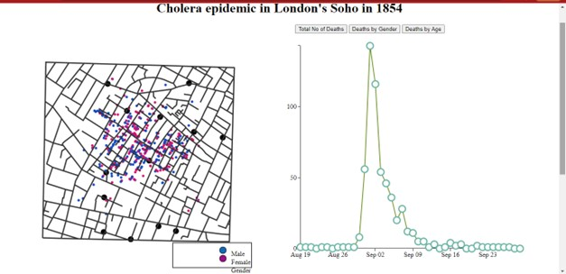
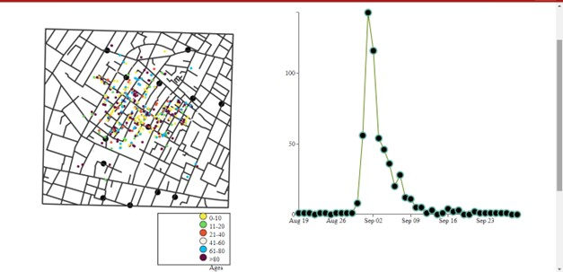

Data Description:
The primary goal of this project is to recreate Dr. John Snow's map of the cholera epidemic in London in 1854 and explain it using some interactive graphics. When anyone first made the connection between contaminated water and cholera, Dr. John Snow's map was considered to be a masterpiece. It is easy to see how these illuminating representations could be useful in identifying the underlying causes of issues. To develop the interactive version of the map for this project, I used D3, HTML, and CSS.
The dataset is made up of four files that provide the coordinates of the streets and pumps where the deaths occur each day, representing attributes like their age and gender. Creating the wireframe with HTML and CSS turned out to be the most reasonable and iterative process because I decided to keep the interactions to a one-page dashboard. To add SVGs, I inserted id and class tags to each section after using CSS grid and flex.
Design Process:
My initial assignment was to use street data to make a map, on which I then had to find every pump and every death record's coordinates. I made a scattered graph and line plot showing how many people died every day to go with it.
Next, the primary objective was to make the map and graph plot interactive. Since the provided dataset does not directly contain the dates of each death, I ran into some problems while combining these graphs. I presumed that the data in death age sex.csv are sorted by date to link it to deathdays.csv and obtain the date for each record.
After that, I was interested in looking up the locations of fatalities according to gender and age. To refresh the map with information about gender and age, I utilized buttons and the onclick event. I selected one color to represent each record on the map to illustrate the overall number of fatalities without any filters.
Two colors—Pink (for females) and Blue (for males)—were utilized when I updated the map in with gender (for male). I could also use sequential colors instead of the distinct categories colors I used to denote the age group when I updated the map with respect to age. I struggled with how to categorize the different age groups by color. It is impossible to distinguish if I use a range of the same hue, and if I use distinct colors for each age group, the growing value of age won't be shown. I decided to use different colors for each age group for this project because I wanted to observe which group had a greater amount of items that were a bit hard to distinguish in consecutive colors.
Conclusion:
The key inference we can make from the graphic is that deaths generally increase on September 1 and are strongly correlated with pump location. In comparison to other locations, some have a higher fatality rate. Apart from that, we can observe that gender does not affect on the number of deaths when we look at deaths by gender; however, age can be a significant element to consider. For age group 5, the death rate is high. As a result, we can argue that visualization is extremely important in understanding how various features affect the number of fatalities.
 